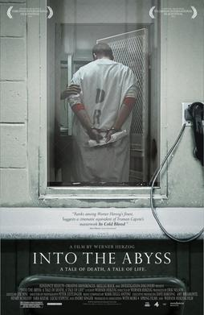

Werner Herzog
2011
105 minutes
This is a depressing Werner Herzog documentary about the death penalty. It focuses on two men who were convicted of a triple murder in Texas, one serving a life sentence and one on death row. It is not an uplifting film, to say the least. Herzog talks with the two men, their family members, family members of the victim, the police, and a chaplain who formerly had worked as one of the technicians conducting lethal injection executions.
The federal prison in the city where you went to college was notorious for being the location where Timothy McVeigh was held and later executed. Thankfully no one you know was ever locked up in that prison, but you did go to the location on one notable visit. Your school, which was all-male at the time, had mandatory ROTC classes for freshmen. As part of this, for one of your classes you had to learn the basics of rappelling, and to pass this section of the class you and your classmates had to rappell down one of the guard towers at that prison. It was fairly easy and less scary than you thought it was, despite your uneasiness with heights. It at least gave you one more interesting talking point for future icebreaker games of "Never Have I Ever" or "Two Truths and a Lie", not that you're in danger of running out of oddball facts about yourself.
Time to choose something different: